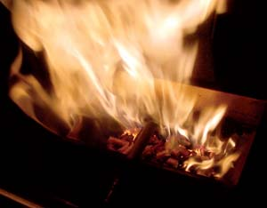

The reputation of wood pellets, those little morsels of compressed fiber widely touted as an economical and environmentally friendly home heating fuel, took a big hit last year and has yet to recover.
In the fall of 2005, with oil and gas prices at historical highs and numerous glowing articles about pellet heating in the mainstream media, the pellet industry was not prepared for the unprecedented demand for its products. Dealers begged stove manufacturers as back order lists grew longer and longer. Many buyers waited more than six months for a stove while others cancelled their orders.
At the same time, pellet stove owners in some regions couldn’t find any pellets. Fuel shortage is the nightmare scenario that could hamper this renewable fuel’s steady climb to respectability.
This year, oil and gas prices have eased back. Gas fireplaces are popular again and pellet stoves are languishing in warehouses instead of flying out of showrooms. Fuel supplies are more reliable, but the new complaint is price. Pellet prices in some regions have doubled in just two years.
Hearth and Home magazine, the main news outlet for the industry, fretted in a November 2006 editorial that “The consumer now has two negative impressions of the pellet industry [fuel shortages and high prices] stamped firmly in his/her mind.”
Meanwhile, turbulence in most other fuel industries has fed the demand for a more secure, local fuel, and another alternative fuel has taken a big market share. Kernel corn-burning stoves have been around for almost 20 years, but in relatively small numbers. One industry insider predicted that U.S. sales in 2006 would exceed 200,000, which is more than sales of wood pellet stoves just a few years ago. Corn fuel has become so popular that many manufacturers have adapted their stoves to burn both wood pellets and corn.
Homeowners searching for a reliable way to reduce heating costs can take a few lessons from these recent ups and downs in both conventional and alternative heating fuels. The first is that prices of oil and gas are likely to remain volatile because of dwindling domestic supplies and instability in many oil producing countries. The second is that for pellet fuel, the most secure supply is likely to be local, so it’s worth investigating where the nearest pellet plant is and how committed the manufacturer is to producing them. The third lesson is that the price of fuel corn is likely to be unpredictable, too, because of challenges to federal corn subsidy programs and the increasing demand for ethanol transportation fuel, most of which uses corn as the feedstock.
We live in an era of roller coaster fuel prices, and nothing on the horizon suggests stability. Before putting your money down on a new alternative fuel heating appliance, do your research and determine whether or not the fuel you’ll need will be available at a price you can afford.
|
 STEVE MAXWELL Before you invest in a pellet stove, make sure you'll have a steady supply of fuel. |
|
|